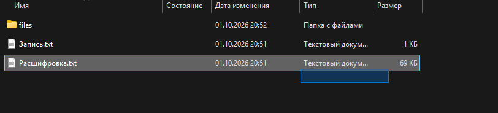
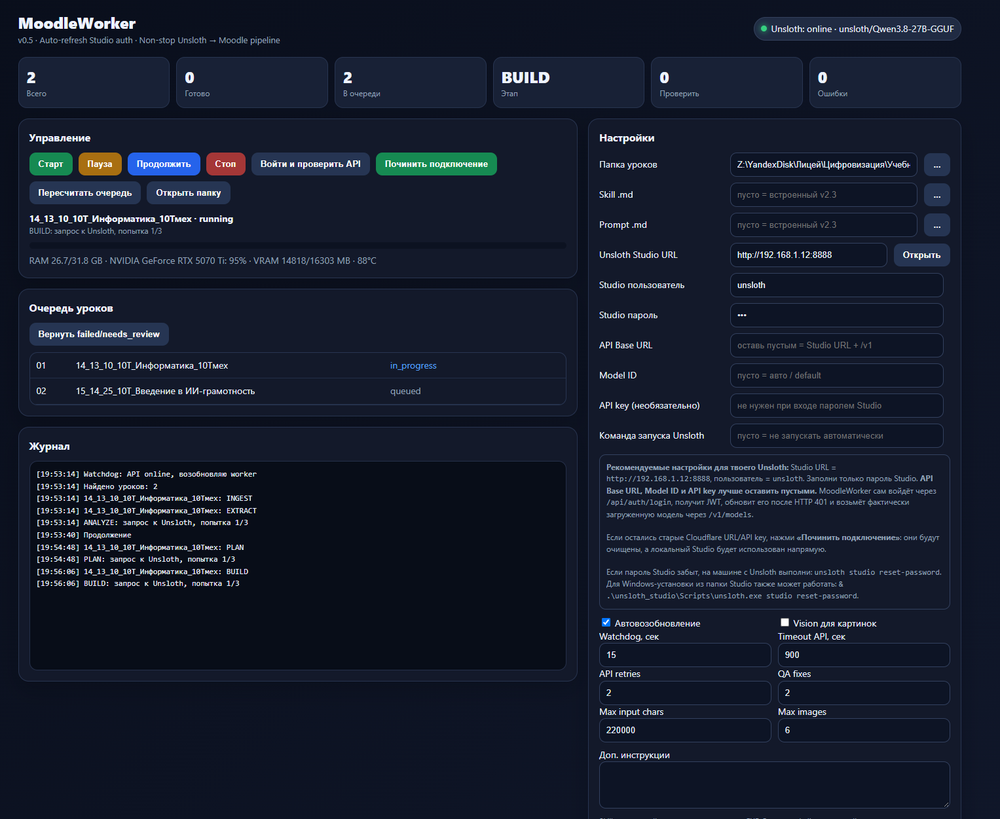

Полный файловый и агентный конвейер: получить запись, расшифровку и материалы занятия, превратить их локальной моделью в полноценный Moodle-safe HTML, проверить и автоматически перейти к следующему уроку.
MoodleWorker выбирает именно родительский каталог уроки. Внутри — только непосредственные папки уроков с числовыми префиксами.
output/
└── 2026-10-03/
└── уроки/
├── 00_09_00_10А_Литература/
│ ├── Расшифровка.txt
│ ├── Запись.txt
│ └── files/
├── 01_10_00_10А_Физика/
│ ├── Расшифровка.txt
│ ├── Запись.txt
│ └── files/
└── ...

Главный источник предмета и фактической темы. Если файл отсутствует или пуст, worker не должен выдумывать урок.
Реальная ссылка/ссылки записи MTS Link. Worker никогда не создаёт URL сам.
Вложения преподавателя: DOCX, PPTX, XLSX, PDF, изображения, TXT, HTML и другие полезные материалы.
LFU — upstream-часть. Начиная с v2.6 папка урока очищена от лишнего технического сырья.
Технические JSON посещаемости могут храниться отдельно в посещаемость/_сырье, но не должны смешиваться с учебным пакетом.
API.txt. Он может содержать MTS token, Eljur devkey и логины/пароли.Для рабочего LAN-примера текущая Studio доступна по адресу:
http://192.168.1.12:8888
На другой машине используйте её реальный IP/порт.
unsloth studio -H 0.0.0.0 -p 8888
http://IP:8888/loginunsloth studio reset-password
Settings → API keys → LAN access.POST /api/auth/login
{"username":"unsloth","password":"..."}
→ access_token
GET /v1/models
POST /v1/chat/completions
Authorization: Bearer <access_token>
При 401 v0.5 автоматически получает новый JWT.

| Поле | Что вводить |
|---|---|
| Папка уроков | Путь до каталога .../уроки |
| Skill .md | Пусто — используется встроенный v2.3 |
| Prompt .md | Пусто — используется встроенный v2.3 |
| Unsloth Studio URL | http://IP:8888 |
| Studio пользователь | unsloth |
| Studio пароль | Пароль страницы Studio login |
| API Base URL | Пусто |
| Model ID | Пусто — авто через /v1/models |
| API key | Пусто при входе по паролю Studio |
| Команда запуска Unsloth | Пусто, если Studio запускается отдельно |
Правильная последовательность: Сохранить настройки → Починить подключение → дождаться Unsloth: online → Старт.
Модель не управляет циклом. Циклом управляет приложение.
lesson_context.json.lesson_plan.json.Следующий урок начинается отдельным набором сообщений. Поэтому длинная история 17–27 уроков не растёт бесконечно.
В папке урока после успешного цикла:
lesson_context.json lesson_plan.json lesson.html lesson_build_report.json
Если lesson.html уже был, создаётся улучшенная версия lesson_improved.html, затем lesson_improved_2.html и т.д.
Откройте нужный ресурс/страницу/описание в Moodle, переключитесь в HTML/source-режим редактора и вставьте содержимое готового HTML-файла. Конкретное название кнопки зависит от установленного редактора Moodle и прав пользователя.
MoodleWorker написан на Go и не требует сторонних Go-модулей.
cd apps/MoodleWorker set GOOS=windows set GOARCH=amd64 set CGO_ENABLED=0 go build -trimpath -ldflags="-s -w -H=windowsgui" -o dist\MoodleWorker.exe .
Также доступны build_windows.bat, build_windows.ps1 и GitHub Actions.
build-windows.yml — build artifact;release.yml — Release при теге moodleworker-v*;pages.yml — публикация этой документации в GitHub Pages.Проверьте OpenAI-compatible prefix /v1. В v0.5 проще оставить API Base URL пустым.
Нажмите Починить подключение. Старый API key/JWT будет заменён входом через Studio password.
Не используйте старый временный Quick Tunnel, если Studio доступна по LAN.
Откройте lesson_build_report.json. После устранения причины используйте кнопку возврата failed/needs_review в очередь.
Worker уже разделяет урок на stateless stages. Поэтому нет необходимости держать один гигантский chat-context на весь день.
Локальные настройки MoodleWorker лежат в %APPDATA%\MoodleWorker\settings.json. Этот файл не должен попадать в репозиторий.